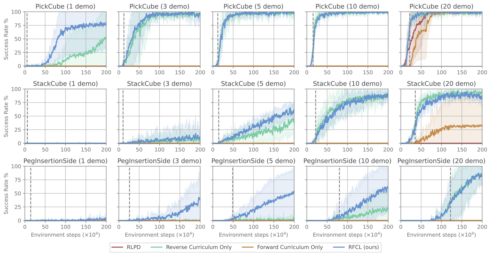

RFCL: Reverse Forward Curriculum Learning for Extreme Sample and Demonstration Efficiency in RL
ICLR 2024
- UC San Diego
-
 Paper
Paper
-
 Twitter
Twitter
-
 Code
Code
Our novel reverse forward curriculum learning (RFCL) algorithm achieves much higher sample and demonstration efficiency compared to other model-free baselines, in addition to solving previously unsolvable tasks (like PegInsertionSide and PlugCharger) from just 1-10 demonstrations and sparse rewards without much hyperparameter tuning. RFCL can solve nearly 70% of hard MetaWorld tasks and all of Adroit from just 1 demo!
Abstract
Reinforcement learning (RL) presents a promising framework to autonomously learn policies through environment interaction to solve tasks, but often requires an infeasible amount of interaction data to solve complex tasks from sparse rewards. One direction has been to augment RL with offline data demonstrating how to solve the desired task, but past work in this area often require a lot of high quality demonstration data that is difficult to obtain especially for domains such as robotics. Our approach consists of a two-stage training process starting with a reverse curriculum followed by a forward curriculum. Unique to our approach compared to past work is the ability to efficiently leverage more than one demonstration efficiently via a per-demonstration reverse curriculum generated via state resets. The result of our reverse curriculum is an initial policy that performs well on a narrow initial state distribution and helps overcome difficult exploration problems. A forward curriculum is then used to accelerate the training of the initial policy to perform well on the full initial state distribution of the task and helps improve demonstration and sample efficiency. We show how the combination of a reverse curriculum and forward curriculum in our method, RFCL, enables significant improvements on demonstration and sample efficiency comparing against various state-of-the-art learning-from-demonstration baselines, even solving previously unsolvable tasks that require high precision and control.
Reverse Forward Curriculum Learning
Below is a simple visual representation of the reverse forward curriculums. The blue arrows represent the given demonstration trajectories (2 in this example), starting from an initial state and moving towards the goal marked by a gold star. Area covered by dashed green lines represents states in which agent achieves high return from. Area shaded in red represents the most frequently sampled initial states.
On the left is the per-demonstration reverse curriculum, which starts by prioritizing initial states from the demonstration that are close to the goal, which are likely to yield sparse reward signals. The reverse curriculum gradually increases the difficulty by initializing the agent to earlier states in each demonstration which are farther away from goal. The result is a specialist policy capable of solving the desired task from a narrow initial state distribution marked by the dashed green lines. Note that some demonstrations are "reverse-solved" earlier and this arises as a result of our per-demonstration reverse curriculum which through ablations is shown to be more efficient than alternatives.
On the right is the forward curriculum that is a simple adaption of Prioritized Level Replay, which always prioritizes initial states not from the demonstration, but from the original task that have high learning potential. Learning potential is computed as a sum of a score and a staleness weight. The score we assign an initial state is either 1, 2 or 3 based on the current policy's performance starting from that state. We assign 1 if the initial state frequently receives nonzero return, 2 if the initial state always receives zero return, and 3 if the initial state sometimes receives nonzero return. The staleness score further ensures we occasionally revisit previously seen initial states and update the score appropriately. By prioritizing initial states with high score + staleness, we frequently sample initial states that have "signs of life," and aggressively sample them until the agent can capably achieve high return from these initial states. In general we observe that inital states with signs of life tend to be close to the set of states from whch the policy is already achieving high return on. Over the course of training, the forward curriculum enables the initially weak policy to efficiently generalize to a much larger initial state distribution.
Results
We rigorously evaluate RFCL against several baselines, including RLPD (state-of-the-art on Adroit at the time of writing), Cal-QL (state-of-the-art offline-to-online RL), JSRL (recent reverse curriculum method), and DAPG (demonstration augmented policy gradient). We benchmark across 22 tasks, with 3 from Adroit, 15 from MetaWorld, and 4 from ManiSkill2.
The main results show the algorithm performance over time when using sparse rewards and just 5 demonstrations. The shaded area shows the 95% confidence intervals over 5 seeds averaged across each task in each of the three suites. RFCL significantly outperforms prior methods. This is especially evident on harder tasks like PegInsertionSide and PlugCharger from ManiSkill2, which are more difficult due to their high initial state randomization and precise manipulation requirements, see the visualizations to see it visually.
Demonstration Ablations
We've seen the sample efficency earlier, to get a sense of the demonstration efficiency we ablate on the number of demonstrations given during training on the ManiSkill2 tasks. We benchmark on ManiSkill2 as they are the most realistic tasks (high initial state randomization, higher fidelity simulation). Our method RFCL again significantly outperforms baselines in terms of demonstration efficiency, being capable of solving environments from as little as 1 demonstration! Critically, we observe that the forward curriculum is most helpful in the low demonstration regime, which can be attributed to the fact that with fewer demonstrations, the reverse curriculum trained policy is succesful on a even narrow set of initial states, meaning initial state prioritization from the forward curriculum is more crucial.
Curriculum Ablations
Above is an animation of the success rate heatmap on a pointmaze which shows how the reverse forward curriculum improves the agent over time compared to using only a forward curriculum or no curriculum. Blue line is the demonstration heading to the red goal. To mimic hard exploration problems in robotics tasks, this pointmaze is modified so that the agent can only reset to states not covered by the demonstration, and it may not collide with the walls.
The reverse curriculum enables very quick solving of the difficult exploration portion of the maze along the demonstration, before leveraging the forward curriculum to then generalize to other initial states.
Task Visualizations
We visualize success and fail trajectories from our method, in addition to what the initial state distribution looks like for selected easy and hard tasks (click the button to switch views).
Hard Tasks (ManiSkill2 PlugCharger, ManiSkill2 PegInsertionSide)
Easy Tasks (Adroit Door, Metaworld Assembly)
Citation
@article{tao2024rfcl,
title={Reverse Forward Curriculum Learning for Extreme Sample and Demonstration Efficiency in RL},
author={Tao, Stone and Shukla, Arth and Chan, Tse-kai and Su, Hao},
booktitle = {International Conference on Learning Representations (ICLR)},
year={2024}
}